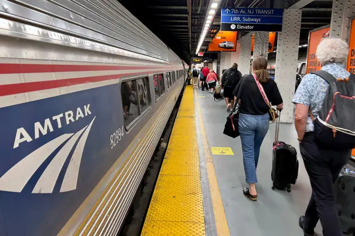

By Xiomar Banks
Currently, the situation is that people who want to travel have to buy multiple tickets for each mode of transportation. This causes a lot of stress, time, and money for many people. Customers who want to travel between cities, and around a city, must go through hurdles to acquire tickets at each mode of transportation. This is especially going to be a problem when the World Cup comes to the United States in 2026. Now foreign travelers, domestic travelers, and sports enthusiasts, will have to spend extra time trying to understand America's complex transportation systems.
Since the World Cup will be hosted by the United States in 2026, people will need an easier and convenient way to transfer between Amtrak and urban transit operators to get to the stadiums the World Cup will be played. Customers will have to learn about each city's urban transit policies and fares when getting off Amtrak and transferring to a city's commuter, like SEPTA in Philadelphia, or the MTA in New York City.
In Philadelphia, for example, if a customer is coming from the Acela, Amtrak, and want to get to the World Cup stadium, they will have to transfer from Amtrak to either the trolley, or MFL, to the BSL, which requires different tickets for each mode. But under a through-ticketing program, this all could be made simpler.
Through-ticketing is the process of having one ticket for multiple modes of transportation. This is not a new concept, in fact, Germany already have a through-ticketing program with planes and trains called "AIRail". This program is limited to what airports and train terminals can be used, but is substantive enough to be a major transporting partner of Germany. Also, America host a multi-journey site that helps organize different flights from different airlines called "Google Flights". Though that is not through-ticketing, it is some source of ingenuity that offers a cohesive journey organizer.
Currently, Amtrak has existing through-ticketing and cross-honoring arrangements in place with NJT and SEPTA. With NJT, Amtrak supports travel to Atlantic City by allowing passengers to use their Amtrak ticket to Philadelphia to board an NJT train onward to Atlantic City (NECC, 2018). This is a specific destination that Amtrak allows through-ticketing to; Atlantic City is the only endpoint and route supported in this approach. This is one of the challenges that need to be addressed: last mile traveled. However, some of these through-ticketing options do not include all transit stops making it difficult for riders to even get to their last mile destinations. Though these examples are current through-ticketing options, they have problems that need to be addressed. For example, showing tickets to the conductor may suffice for Amtrak, however, at each NJT turnstile, there has to be a barcode reader installed.
Amtrak also has arrangements with United Airlines as a codesharing agreement. Codesharing is when two or more transportation providers public and market the same service under their own brand and timetable. While tickets can be purchased through either operator, the service is operated by one company (NECC, 2018). This codesharing agreement is only for commuters traveling to the Newark Liberty International and at select NEC stations such as Philadelphia’s 30th Street.
The average person spends too much time between transferring between Amtrak and public transit. On average, the average person spends an extra 10 minutes searching for the appropriate ticket for their journey. This process could be made easier if the ticketing process was a through-ticketing solution. But since that is not the current situation, we can assume the map below is about the current time it takes for a customer to get from Penn Station, in New York to the Lincoln Financial Field in Philadelphia (where the World Cup will be played).
Lets follow the time it takes a typical customer who just wanted to watch the World Cup matches in person.
As you can see, it takes much time to not use a through-ticketing solution for travel. The current ticketing method in place does not allow for ease of travel.
The way this through-ticketing program would work would require a lot of government intervention. But I am not going to get into all the technical policies that are required to achieve such program. I will, however, mention how I got here with my map and data points. First, I created a geojson file with QGIS of all the required lines and tracks of each mode of transportation (from NYC to Philly). Then, I manipulated code data to create this website that shows the maps and follow points of the travelers mobility. Last, I tested my data, and made plenty of iterations controlling for results that you can see here.
I have encountered some challenges along the way. Mainly, challenges with the data, with QGIS outputs, and with the code itself. My biggest challenge was converting a MultiLineString to a LineString from QGIS so the javascript code can read the coordinates properly. Even after completing this code, I ran into issues of the code not reading all of the coordinates given. I tried manipulating the geojson file, downloading new geojson files, and even searching online for answers to my questions. Nothing seemed to work. But after all that, i figured out what went wrong and got my website to write the map as shown.
In conclusion, traveling from city to city to watch the World Cup can be made easier with the help of through-ticketing. If the method had to be chosen, I believe more people would choose through-ticketing than the current method of travel. Purchasing multiple tickets at each new transit mode can be tiresome and daunting. But with though-ticketing, there would be less time spent trying to figure out what tickets work for which mode of transit.
Though there are plenty of governmental challenges out there that have to be overcame, through-ticketing can find itself working during the World Cup. People would love to see something like a though-ticketing solution for America's NEC (Northeast Corridor). The only reason the NEC was chosen was because that's the only profitable portion that Amtrak owns and 3 of the World Cup cities will be played along the NEC (Boston, Philly, and NYC).
Through-ticketing would not erase the current ticketing structures in place; therefore, it would be used as a secondary option to the existing platforms. People who choose the through-ticketing option could see benefits and cost saving opportunities. Each option could be successful during the World Cup, and beneficial to the customers so that convenience and ease of mobility occurs.
With the right approach, a through-ticketing pilot program could serve the NEC customers with ease and convenience during the World Cup.